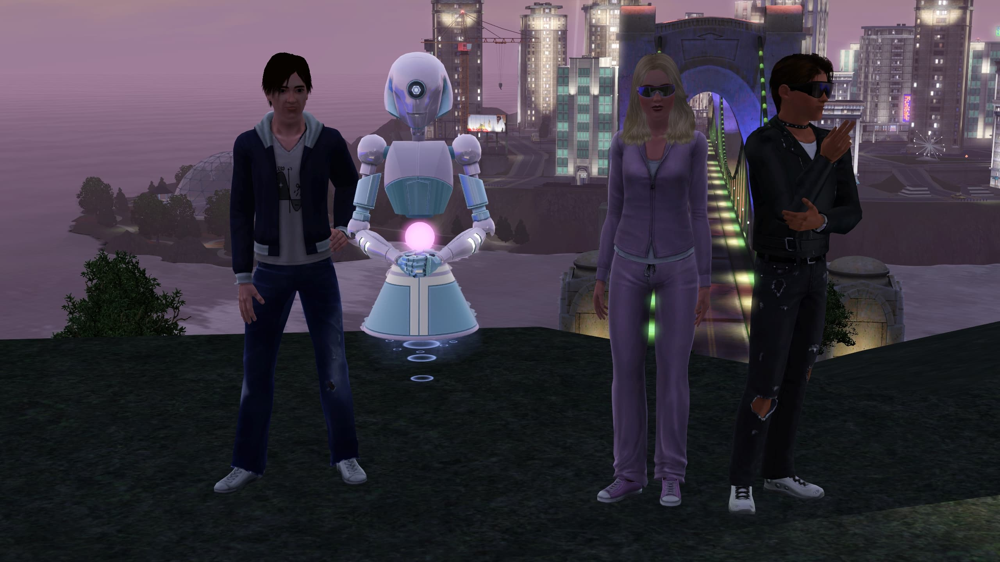

My Sims Family

Here, I want to share with you a story about my real university
friends. I decided to create them and myself in the Sims 3 game and
then develop the story of our future lives.
In college, the bond between my friends Danyil, Talal, and me grew
strong as we navigated the challenges of higher education. Late nights
spent huddled over textbooks and shared laughter etched memories into
our hearts, creating a frienship that would last a lifetime.
Upon graduating, Danyil, Talal, and me made a pivotal decision to
embark on the next chapter of our lives by becoming roommates.
Danyil's tech-savvy brilliance led him to craft a unique creation
known as Chatgpt, a robot that seamlessly assumed the household
chores. He didn't stop there; he donned the dual roles of bot builder
and educator, imparting knowledge as a dedicated teacher at a local
school.
Meanwhile, Talal, was the popular superstar throughout our college
years, wrote his own success story. His graduation paved the way for a
flourishing career as a scriptwriter at a prestigious film studio,
where he wove captivating narratives that left audiences
spellbound.
Kate (me), a business major with an entrepreneurial spirit, ventured
into the world of commerce and found swift success. But what truly set
her apart was her virtual prowess in The Sims. She developed a lot of
skills, such as cooking, logic, guitar playing, gardening,
photography, mechanical skills, and her storytelling skills left us in
awe.
We took our first steps beyond the campus into a cozy city apartment
in Bridgeport, a bustling metropolis teeming with excitement and
opportunities. However, our aspirations were boundless, and with
unwavering determination, we made our way to a spacious house on the
city's outskirts.
You may check our house here:
Within the warm embrace of our new home, our friendships blossomed. We celebrated our big achievements with joy, and we supported each other when times were tough. Our friendship remained unwavering. We continued to chase our dreams, all while nurturing our virtual adventures in The Sims. Throughout it all, we held close to the memories of our college days and the radiant future we had envisioned.